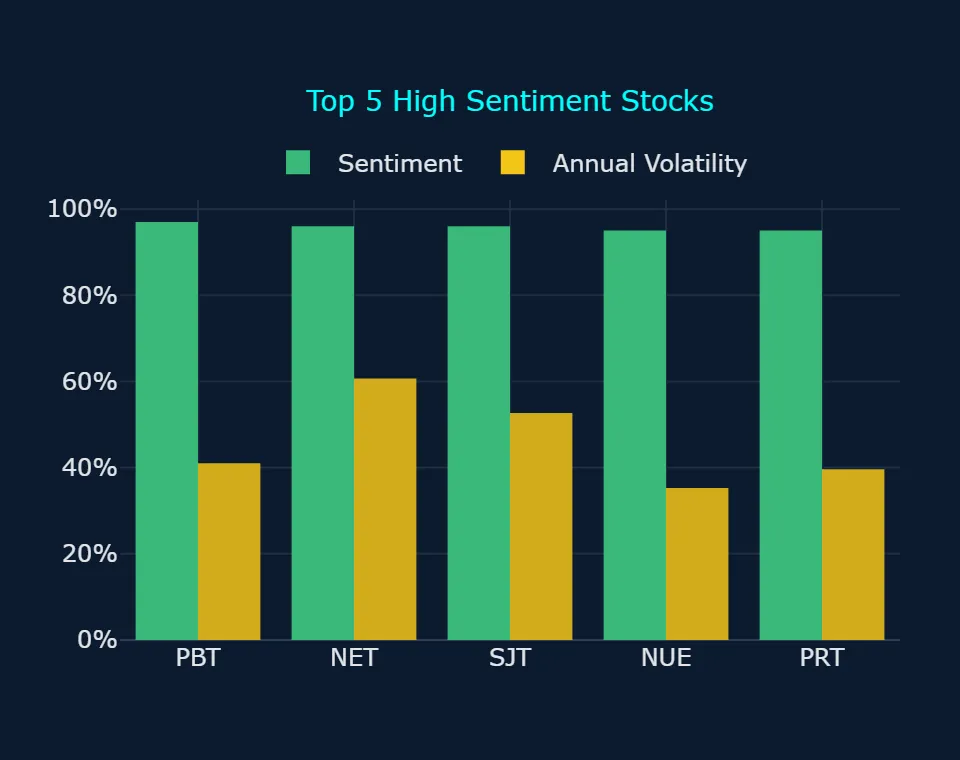
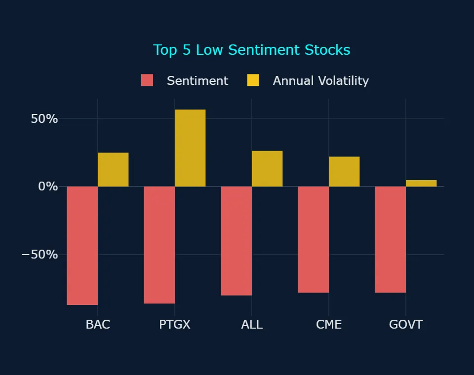
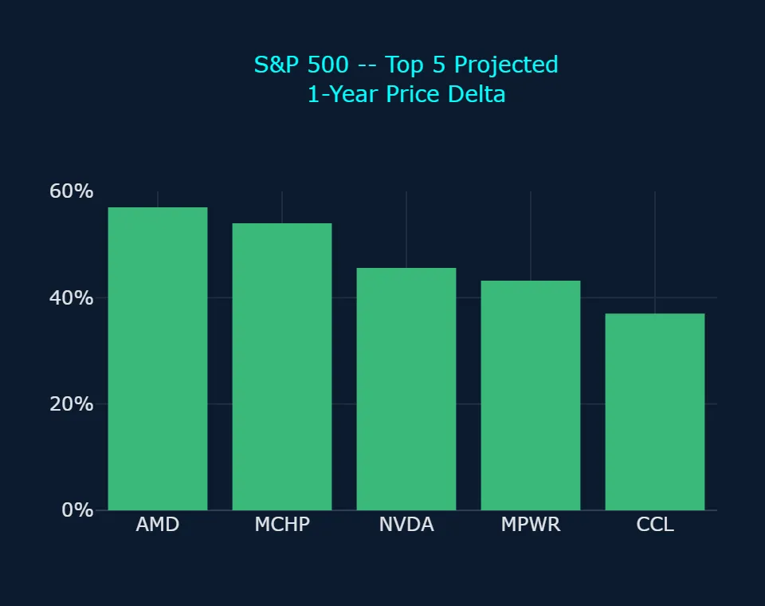
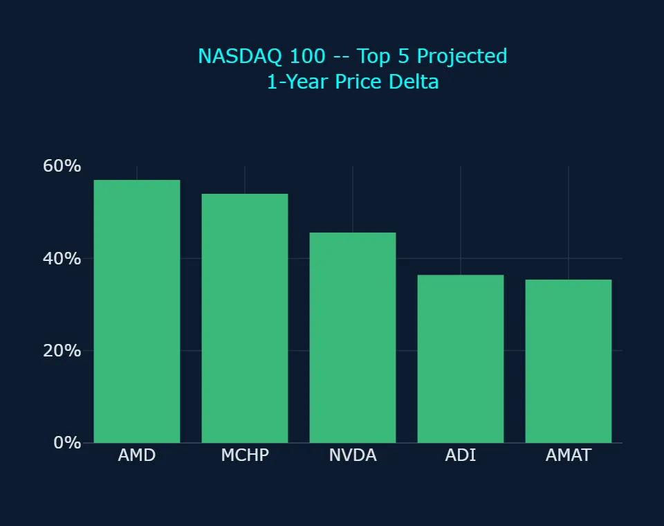
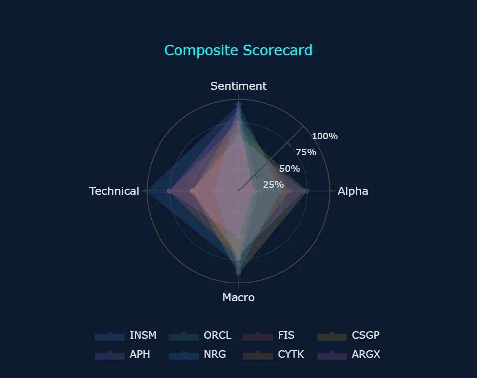
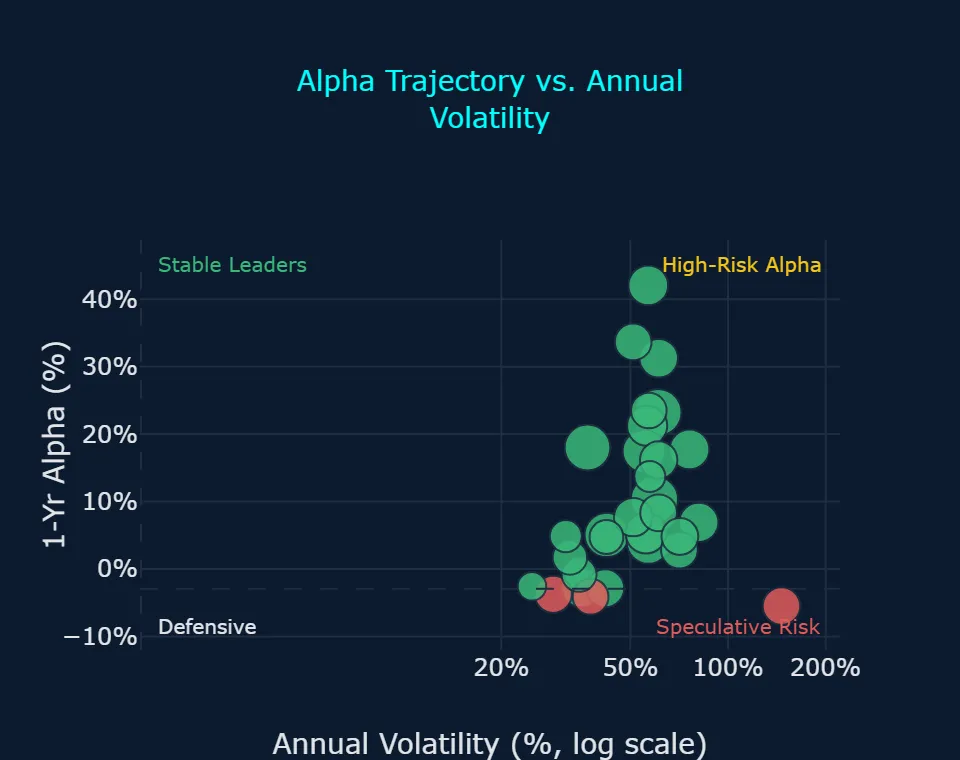
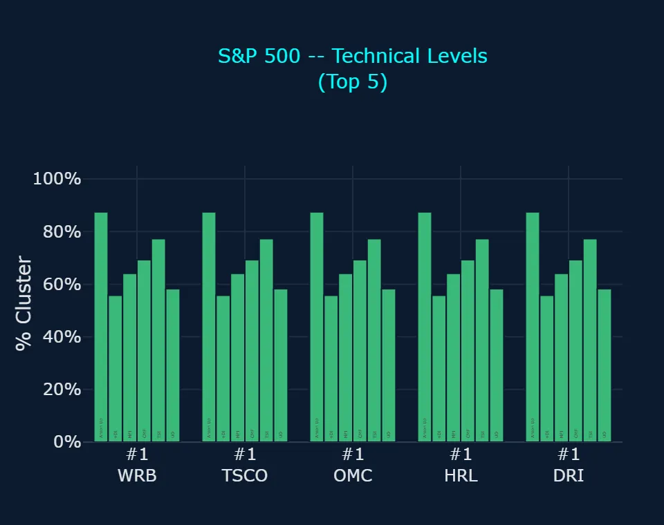
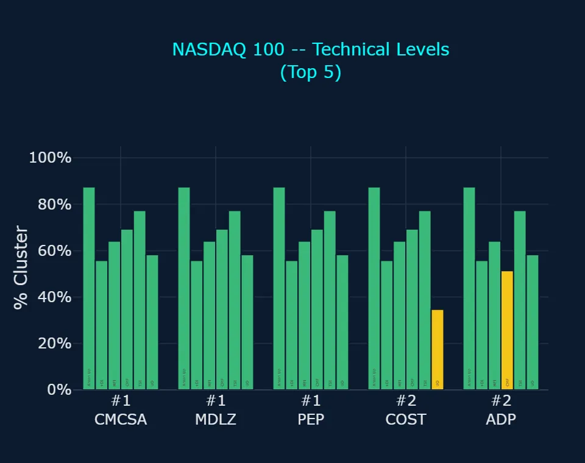
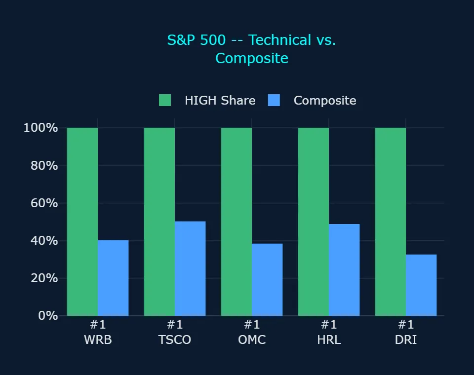
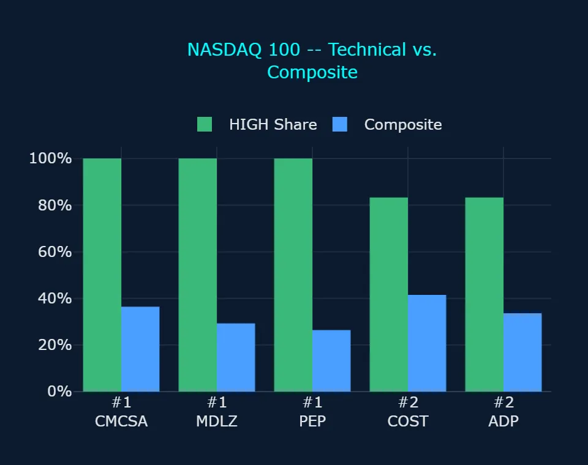

Zoonova AI: Pre-Market Quantitative Briefing – November 25, 2026
Session Quantitative Briefing: The Zoonova AI Intelligence Engine executes a hybrid architecture combining a proprietary Quad-Ensemble machine learning framework with Google Gemini Flash for real-time contextual synthesis and semantic macroeconomic grounding. The quantitative pipeline integrates four specialized estimators: Random Forest Regressor (RFR) for baseline structural stability, eXtreme Gradient Boosting (XGB) optimized for residual loss minimization, Categorical Boosting (CAT) for high-cardinality categorical signal processing, and Temporal Fusion Transformer (TFT) for multi-horizon price and volatility forecasting.
Zoonova AI: Pre-Market Momentum & Liquidity Report
1. QUANTITATIVE MODEL OVERVIEW & SIGNAL METRICS
Market forecasts and systemic signals are generated by Zoonova's Quad-Ensemble (Random Forest Regressor [RFR], eXtreme Gradient Boosting [XGB], Categorical Boosting [CAT], and Temporal Fusion Transformer [TFT]) for price targets and alpha probability; VADER for sentiment scoring; BIRCH clustering for anomaly detection and macro breadth modeling.
- Equities show defensive near-term positioning with headline sentiment at -30.0% across SPY (ETF), QQQ (ETF), and DIA (ETF), while long-term price projections continue to indicate structural upward drift across core indices.
- The SPDR S&P 500 ETF Trust (SPY) closed at $718.78 on 2026-11-24 (Zoonova, 2026-11-24), with models projecting a 1-year target of $804.52, reflecting an implied gain of 11.9% alongside an annualized volatility of 17.51%.
- Growth benchmarks indicate stronger upside potential as the Invesco QQQ Trust Series 1 (QQQ) closed at $638.10 on 2026-11-24 (Zoonova, 2026-11-24), carrying a projected 1-year price of $779.12 (a 22.1% implied increase) and a 1-year Alpha of +10.17% with an annualized volatility of 23.66%.
- Capital preservation benchmarks present muted long-term trajectories, with the Vanguard Total Bond Market ETF (BND) closed at $71.36 on 2026-11-24 (Zoonova, 2026-11-24) targeting $75.84 (implied +6.3% change, annualized volatility 4.39%) and the SPDR Gold Shares ETF (GLD) closed at $325.45 on 2026-11-24 (Zoonova, 2026-11-24) projecting $335.57 (implied +3.1% change, annualized volatility 25.09%).
2. SENTIMENT INSIGHTS – TOP 5 HIGH & LOW
Top 5 High Sentiment Stocks
| Ticker | Company Name | Sentiment Score | Primary Catalyst / Driver |
|---|---|---|---|
| PBT | Permian Basin Royalty Trust | +97.0% | Unitholders approved an amended indenture and business combination agreement enabling the dissolution of the trust and distribution of newly formed operating company equity (Kalkine Media, 2026-11-24). |
| NET | Cloudflare Inc | +96.0% | Enterprise demand for edge security and automated traffic mitigation surged as artificial intelligence tools accelerated the discovery and exploitation of internet vulnerabilities (Crypto Briefing, 2026-11-21). |
| SJT | San Juan Basin Royalty Trust | +96.0% | Speculative retail sentiment rebounded despite the operator declaring no November cash distribution due to cumulative net excess production costs of $9.7 million (PR Newswire, 2026-11-19). |
| NUE | Nucor Corp. | +95.0% | Domestic steel demand expansion prompted spot price increases on hot-rolled coil to $1,330 per ton alongside ongoing infrastructure capacity additions (Steel Market Update, 2026-11-23). |
| PRT | PermRock Royalty Trust | +95.0% | Investor interest held firm as the trust declared a regular monthly distribution of $0.008479 per unit despite holdbacks for plugging liabilities and overpayment recoupment (PR Newswire, 2026-11-19). |
Top 5 Low Sentiment Stocks
| Ticker | Company Name | Sentiment Score | Primary Friction / Risk Factor |
|---|---|---|---|
| BAC | Bank Of America Corp. | -87.0% | Sentiment deteriorated after customer-facing online and mobile banking infrastructure suffered multi-day technical outages across the United States (Emergent, 2026-11-24). |
| PTGX | Protagonist Therapeutics Inc | -86.0% | Negative market sentiment emerged following an executive Form 144 regulatory notice disclosing the proposed open-market sale of vested shares (Stock Titan, 2026-11-18). |
| ALL | Allstate Corp (The) | -80.0% | Underwriting sentiment was pressured after the insurer estimated October pretax catastrophe losses at $232 million, more than doubling prior-year figures (AM Best News, 2026-11-19). |
| CME | CME Group Inc | -78.0% | Sentiment remained cautious following executive insider equity sales even as derivatives volume set a single-day record of 71.5 million contracts (Markets Media, 2026-11-25). |
| GOVT* | iShares U.S. Treasury Bond ETF | -78.0% | Fixed-income sentiment weakened as sustained interest-rate volatility and Treasury duration risks weighed on broad government debt valuations (BlackRock, 2026-11-24). |
* ETF (exchange-traded fund)
3. ALPHA PROBABILITY & PRICE DELTA LEADERBOARD – 1-YEAR HORIZON
S&P 500 – Top 5 High Alpha Probability (1yr)
| Ticker | Prev Close 2026-11-24 ($) | 1-Yr Target Price ($) | Alpha Probability (%) | Implied Excess Alpha (%) | 10%+ Alpha? |
|---|---|---|---|---|---|
| FIS | $27.13 | $35.26 | 67.42% | 18.02% | Both Yes |
| ORCL | $109.50 | $147.99 | 66.48% | 23.22% | Both Yes |
| APH | $73.47 | $85.18 | 63.50% | 4.00% | Split |
| FISV | $58.62 | $70.13 | 54.77% | 7.70% | Split |
| CSGP | $32.64 | $38.18 | 49.60% | 5.05% | Both No |
S&P 500 – Top 5 Price Delta + % Change (1yr)
| Ticker | Prev Close 2026-11-24 ($) | 1-Yr Target Price ($) | Absolute Delta ($) | Projected 1-Yr % Change (%) | Implied Excess Alpha (%) |
|---|---|---|---|---|---|
| AMD | $413.27 | $648.75 | $235.48 | 56.98% | 45.05% |
| MCHP | $56.36 | $86.78 | $30.42 | 53.97% | 42.05% |
| NVDA | $155.38 | $226.23 | $70.85 | 45.60% | 33.67% |
| MPWR | $1,190.16 | $1,703.92 | $513.76 | 43.17% | 31.24% |
| CCL | $28.40 | $38.91 | $10.51 | 37.01% | 25.08% |
NASDAQ 100 – Top 5 High Alpha Probability (1yr)
| Ticker | Prev Close 2026-11-24 ($) | 1-Yr Target Price ($) | Alpha Probability (%) | Implied Excess Alpha (%) | 10%+ Alpha? |
|---|---|---|---|---|---|
| KLAC | $133.65 | $177.99 | 44.02% | 21.24% | Split |
| CPRT | $32.35 | $34.99 | 31.64% | -3.75% | Both No |
| MRNA | $227.38 | $242.06 | 30.93% | -5.48% | Both No |
| DXCM | $84.64 | $92.32 | 30.87% | -2.85% | Both No |
| NFLX | $58.87 | $65.43 | 29.90% | -0.79% | Both No |
NASDAQ 100 – Top 5 Price Delta + % Change (1yr)
| Ticker | Prev Close 2026-11-24 ($) | 1-Yr Target Price ($) | Absolute Delta ($) | Projected 1-Yr % Change (%) | Implied Excess Alpha (%) |
|---|---|---|---|---|---|
| AMD | $413.27 | $648.75 | $235.48 | 56.98% | 45.05% |
| MCHP | $56.36 | $86.78 | $30.42 | 53.97% | 42.05% |
| NVDA | $155.38 | $226.23 | $70.85 | 45.60% | 33.67% |
| ADI | $312.95 | $426.90 | $113.95 | 36.41% | 24.48% |
| AMAT | $323.76 | $438.45 | $114.69 | 35.42% | 23.50% |
4. REAL-TIME CONTEXTUAL ENRICHMENT
Macro breadth reflects marked sector divergence across public equities, driven by industrial resilience and fixed income friction. In basic materials and manufacturing, Nucor Corp. continues to benefit from favorable pricing power, raising its hot-rolled coil spot price for consecutive weeks to $1,330 per ton amid robust domestic mill utilization (Steel Market Update, 2026-11-23). Conversely, energy royalty vehicles exhibit extreme dispersion; Permian Basin Royalty Trust unitholders approved a combination agreement to transfer assets into an operating structure (Kalkine Media, 2026-11-24), while San Juan Basin Royalty Trust suspended distributions under a $9.7 million net production-cost deficit (PR Newswire, 2026-11-19). Broad capital markets remain sensitive to interest-rate developments, highlighted by CME Group processing a single-day record of 71.5 million contracts led by unprecedented volume in Treasury futures (Markets Media, 2026-11-25).
Predictive machine learning models identify concentrated alpha opportunities in select technology and healthcare names, contrasting with headline benchmark consolidation. In large-scale cloud infrastructure, Oracle Corp. closed at $109.50 on 2026-11-24 (Zoonova, 2026-11-24); both models expect it to beat the benchmark by 10%+, assigning a 1-year Alpha Probability of 66.48% and an implied 1-year Alpha of +23.22% following management confirmations that hyperscale AI commitments and data center buildouts are fully funded (TradingKey, 2026-11-24). In enterprise fintech, Fidelity National Information Services, Inc. closed at $27.13 on 2026-11-24 (Zoonova, 2026-11-24); both models expect it to beat the benchmark by 10%+ with a 67.42% Alpha Probability and a 1-year target of $35.26, indicating that current valuations have over-discounted lowered full-year guidance and executive turnover (Levi & Korsinsky, 2026-11-11). Meanwhile, BIRCH clustering flags systemic trend pressure across hardware and semiconductor equities, registering moderate bearish anomalies on Advanced Micro Devices Inc. and Analog Devices Inc., while identifying bullish rotation across biotechnology leaders like Insmed Inc.
5. ANOMALY DETECTION SCANNER
Direction: Bearish
Moderate Severity (8 stocks)
- ADI – Analog Devices Inc.: Bearish Short-Term (3d) Trend Anomaly, Bearish Long-Term (1w) Trend Anomaly
- AMD – Advanced Micro Devices Inc.: Bearish Short-Term (3d) Trend Anomaly, Bearish Long-Term (1w) Trend Anomaly
- ANET – Arista Networks Inc: Bearish Short-Term (3d) Trend Anomaly, Bearish Long-Term (1w) Trend Anomaly
- HPE – Hewlett Packard Enterprise Co: Bearish Short-Term (3d) Trend Anomaly, Bearish Long-Term (1w) Trend Anomaly
- MATX – Matson Inc: Bearish Short-Term (3d) Trend Anomaly, Bearish Long-Term (1w) Trend Anomaly
- MU – Micron Technology Inc.: Bearish Short-Term (3d) Trend Anomaly, Bearish Long-Term (1w) Trend Anomaly
- STX – Seagate Technology Holdings Plc: Bearish Short-Term (3d) Trend Anomaly, Bearish Long-Term (1w) Trend Anomaly
- TXN – Texas Instruments Inc.: Bearish Short-Term (3d) Trend Anomaly, Bearish Long-Term (1w) Trend Anomaly
Low Severity (19 stocks)
- AMAT – Applied Materials Inc.: Bearish Short-Term (3d) Trend Anomaly
- AVGO – Broadcom Inc: Bearish Long-Term (1w) Trend Anomaly
- CRWD – Crowdstrike Holdings Inc: Bearish Long-Term (1w) Trend Anomaly
- CSCO – Cisco Systems, Inc.: Bearish Short-Term (3d) Trend Anomaly
- ETN – Eaton Corporation plc: Bearish Short-Term (3d) Trend Anomaly
- GLW – Corning, Inc.: Bearish Short-Term (3d) Trend Anomaly
- GS – Goldman Sachs Group, Inc.: Bearish Long-Term (1w) Trend Anomaly
- INTC – Intel Corp.: Bearish Short-Term (3d) Trend Anomaly
- KEYS – Keysight Technologies Inc: Bearish Short-Term (3d) Trend Anomaly
- KLAC – KLA Corp.: Bearish Short-Term (3d) Trend Anomaly
- LRCX – Lam Research Corp.: Bearish Short-Term (3d) Trend Anomaly
- MDT – Medtronic Plc: Bearish Short-Term (3d) Trend Anomaly
- MPWR – Monolithic Power System Inc: Bearish Short-Term (3d) Trend Anomaly
- MRVL – Marvell Technology Inc: Bearish Short-Term (3d) Trend Anomaly
- MS – Morgan Stanley: Bearish Long-Term (1w) Trend Anomaly
- NRG – NRG Energy Inc.: Bearish Short-Term (3d) Trend Anomaly
- NTAP – Netapp Inc: Bearish Short-Term (3d) Trend Anomaly
- TER – Teradyne, Inc.: Bearish Short-Term (3d) Trend Anomaly
- WDC – Western Digital Corp.: Bearish Short-Term (3d) Trend Anomaly
Direction: Bullish
Moderate Severity (7 stocks)
- COGT – Cogent Biosciences Inc: Bullish Short-Term (3d) Trend Anomaly, Bullish Long-Term (1w) Trend Anomaly
- DLTR – Dollar Tree Inc: Bullish Short-Term (3d) Trend Anomaly, Bullish Long-Term (1w) Trend Anomaly
- INSM – Insmed Inc: Bullish Short-Term (3d) Trend Anomaly, Bullish Long-Term (1w) Trend Anomaly
- KRYS – Krystal Biotech Inc: Bullish Short-Term (3d) Trend Anomaly, Bullish Long-Term (1w) Trend Anomaly
- PTGX – Protagonist Therapeutics Inc: Bullish Short-Term (3d) Trend Anomaly, Bullish Long-Term (1w) Trend Anomaly
- RVMD – Revolution Medicines Inc: Bullish Short-Term (3d) Trend Anomaly, Bullish Long-Term (1w) Trend Anomaly
- STOK – Stoke Therapeutics Inc: Bullish Short-Term (3d) Trend Anomaly, Bullish Long-Term (1w) Trend Anomaly
Low Severity (21 names: 19 stocks, 2 ETFs)
- AJG – Arthur J. Gallagher & Co.: Bullish Short-Term (3d) Trend Anomaly
- ALKS – Alkermes plc: Bullish Short-Term (3d) Trend Anomaly
- ANAB – AnaptysBio Inc: Bullish Short-Term (3d) Trend Anomaly
- ARGX – Argen X SE: Bullish Short-Term (3d) Trend Anomaly
- BBIO – BridgeBio Pharma Inc: Bullish Short-Term (3d) Trend Anomaly
- CYTK – Cytokinetics Inc: Bullish Short-Term (3d) Trend Anomaly
- INCY – Incyte Corp.: Bullish Short-Term (3d) Trend Anomaly
- KR – Kroger Co.: Bullish Short-Term (3d) Trend Anomaly
- MDGL – Madrigal Pharmaceuticals Inc: Bullish Short-Term (3d) Trend Anomaly
- MRK – Merck & Co Inc: Bullish Short-Term (3d) Trend Anomaly
- MRNA – Moderna Inc: Bullish Short-Term (3d) Trend Anomaly
- OMER – Omeros Corporation: Bullish Short-Term (3d) Trend Anomaly
- REGN – Regeneron Pharmaceuticals, Inc.: Bullish Short-Term (3d) Trend Anomaly
- ROST – Ross Stores, Inc.: Bullish Short-Term (3d) Trend Anomaly
- TTWO – Take-Two Interactive Software, Inc.: Bullish Short-Term (3d) Trend Anomaly
- TVTX – Travere Therapeutics Inc: Bullish Short-Term (3d) Trend Anomaly
- UTHR – United Therapeutics Corp: Bullish Short-Term (3d) Trend Anomaly
- VHT* – Vanguard Health Care ETF: Bullish Short-Term (3d) Trend Anomaly
- XLV* – Health Care Select Sector SPDR: Bullish Short-Term (3d) Trend Anomaly
- XNCR – Xencor Inc: Bullish Short-Term (3d) Trend Anomaly
- ZYME – Zymeworks BC Inc: Bullish Long-Term (1w) Trend Anomaly
* ETF (exchange-traded fund)
6. STRATEGIC INVESTMENT ASSESSMENT
- Portfolio positioning should favor high-conviction alpha generators with robust Macro Alignment rather than broad benchmark beta, given prevailing negative near-term sentiment of -30.0% across major equity index ETFs.
- Insmed Inc leads the Main Scorecard with a Composite of 70.9, an Alpha Rating of 21.6, a Sentiment Rating of 93.5, a Technical Signal of 100.0, and a Macro Alignment of 80.1, reinforced by moderate bullish short-term and long-term trend anomalies.
- Oracle Corp. provides prime enterprise growth exposure, ranking high on the Main Scorecard with a Composite of 69.8, an Alpha Rating of 73.5, and a Macro Alignment of 90.0, with both models projecting it to beat the benchmark by 10%+.
- Exercise caution within technology hardware and semiconductors: BIRCH anomaly modeling confirmed 8 moderate bearish trend anomalies (including Advanced Micro Devices Inc., Analog Devices Inc., and Micron Technology Inc.), while mega-cap tech holdings such as Microsoft Corporation (Composite 26.7) and Apple Inc (Composite 28.3) score at the bottom of the Tech Stock Scorecard.
- Maintain conservative duration across fixed income allocations, as the iShares U.S. Treasury Bond ETF (GOVT) exhibits depressed sentiment of -78.0% and the Vanguard Total Bond Market ETF (BND) projects modest 1-year upside of 6.3% with an annualized volatility of 4.39%.
7. STOCK SCORECARD
Main Scorecard
| Ticker | Composite (%) | Alpha Rating | 10%+ Alpha? | Projected 1-Yr Change (%) | Street Consensus (Upside) | Next Earnings | Sentiment Rating | Technical Signal | Macro Alignment | Anomaly Flag | Catalyst / Risk | Market Cap | EPS Revisions (30d) | Short Interest / DTC | Options Flow | Earnings Surprise (4Q) | Bias |
|---|---|---|---|---|---|---|---|---|---|---|---|---|---|---|---|---|---|
| INSM | 70.9% | 21.6 | Split | +22.3% | Buy (+6.4%) | 2027-02-18 | 93.5 | 100.0 | 80.1 | Bullish (3d/1w) | Sanofi Acquisition Proposal | $25.8B | Upward (+12.5%) | 6.6% / 3.6 DTC | Bullish (Call Skew) | 3/4 Beats | Bullish |
| ORCL | 69.8% | 73.5 | Both Yes | +35.2% | Buy (+115.7%) | 2026-12-09 (in 14d) | 69.0 | 50.0 | 90.0 | None | Cloud Infrastructure Scaling | $317.9B | Upward (+5.6%) | 1.8% / 2.4 DTC | Bullish (Call Skew) | 4/4 Beats (+8.1% avg) | Bullish |
| FIS | 67.5% | 74.5 | Both Yes | +30.0% | Hold (+25.3%) | 2027-02-22 | 60.0 | 50.0 | 88.0 | None | Guidance Reset Fallout | $13.8B | Downward (-6.7%) | 3.2% / 3.4 DTC | Bearish (Put Heavy) | 2/4 Beats | Bullish |
| CSGP | 64.1% | 54.8 | Both No | +17.0% | Buy (+9.8%) | 2027-01-26 | 83.0 | 50.0 | 71.9 | None | Residential Portal Growth | $13.3B | Neutral/Flat (0.0%) | 3.8% / 4.1 DTC | Neutral / Mixed | 3/4 Beats | Neutral |
| APH | 62.1% | 70.2 | Split | +15.9% | Strong Buy (+44.5%) | 2027-01-28 | 59.0 | 50.0 | 69.1 | None | AI Server Interconnects | $191.2B | Upward (+7.2%) | 2.1% / 2.2 DTC | Bullish (Call Skew) | 4/4 Beats (+6.5% avg) | Neutral |
| NRG | 61.0% | 45.2 | Split | +29.4% | Buy (+81.3%) | 2027-02-26 | 95.0 | 25.0 | 87.0 | Bearish (3d) | Power Demand Growth | $20.5B | Upward (+4.2%) | 4.8% / 3.1 DTC | Neutral / Mixed | 3/4 Beats | Neutral |
| CYTK | 56.9% | 17.2 | Both No | +17.3% | Strong Buy (+77.8%) | 2027-02-18 | 74.0 | 75.0 | 72.7 | Bullish (3d) | Aficamten FDA Approval | $7.1B | Upward (+14.0%) | 14.0% / 16.5 DTC | Bullish (Call Skew) | 3/4 Beats | Neutral |
| ARGX | 55.0% | 14.6 | Both No | +9.2% | Buy (+15.9%) | 2027-02-25 | 88.5 | 75.0 | 48.9 | Bullish (3d) | Vyvgart Label Expansion | $55.1B | Upward (+11.8%) | 2.6% / 3.8 DTC | Bullish (Call Skew) | 4/4 Beats (+15.2% avg) | Neutral |
| KLAC | 54.9% | 48.7 | Split | +33.2% | Buy (+63.3%) | 2027-01-28 | 65.0 | 25.0 | 89.0 | Bearish (3d) | Process Control Demand | $174.1B | Upward (+5.1%) | 2.4% / 2.2 DTC | Neutral / Mixed | 4/4 Beats (+4.8% avg) | Neutral |
| INTC | 54.0% | 22.7 | Split | +29.7% | Hold (+64.4%) | 2027-01-28 | 94.0 | 25.0 | 87.3 | Bearish (3d) | Foundry Cost Reductions | $272.6B | Downward (-8.4%) | 2.8% / 2.1 DTC | Bearish (Put Heavy) | 2/4 Beats | Neutral |
| MCHP | 53.9% | 13.6 | Split | +54.0% | Buy (+53.4%) | 2027-02-04 | 75.5 | 50.0 | 92.3 | None | Industrial Inventory Clearing | $30.2B | Downward (-4.5%) | 6.9% / 3.2 DTC | Neutral / Mixed | 2/4 Beats | Neutral |
| MRVL | 53.2% | 27.7 | Both No | +18.8% | Strong Buy (+122.0%) | 2026-12-01 (in 6d) | 94.0 | 25.0 | 75.5 | Bearish (3d) | Custom ASIC Expansion | $115.5B | Upward (+6.8%) | 2.1% / 2.3 DTC | Bullish (Call Skew) | 4/4 Beats (+5.4% avg) | Neutral |
| MPWR | 51.3% | 35.0 | Split | +43.2% | Strong Buy (+53.9%) | 2027-02-11 | 65.0 | 25.0 | 91.3 | Bearish (3d) | Enterprise Power Demand | $65.0B | Upward (+6.4%) | 4.0% / 4.2 DTC | Bullish (Call Skew) | 4/4 Beats (+5.8% avg) | Neutral |
| FISV | 50.9% | 60.6 | Split | +19.6% | Hold (+10.7%) | 2027-02-08 | 19.5 | 50.0 | 76.6 | None | Merchant Acquiring Volume | $31.2B | Downward (-3.2%) | 4.6% / 3.5 DTC | Neutral / Mixed | 3/4 Beats | Bearish |
| DXCM | 49.9% | 34.1 | Both No | +9.1% | Strong Buy (+16.5%) | 2027-02-11 | 70.0 | 50.0 | 48.1 | None | Stelo Sensor Adoption | $30.7B | Upward (+3.9%) | 4.3% / 2.8 DTC | Bullish (Call Skew) | 4/4 Beats (+8.2% avg) | Neutral |
| NVDA | 47.5% | 26.5 | Split | +45.6% | Buy (+66.6%) | 2027-02-24 | 35.0 | 50.0 | 91.6 | None | Leadership Reinstatement Optimism | $3.56T | Upward (+8.5%) | 1.2% / 1.1 DTC | Bullish (Call Skew) | 4/4 Beats (+6.2% avg) | Bearish |
| WDC | 47.5% | 11.8 | Both No | +16.7% | Buy (+46.0%) | 2027-01-22 | 94.0 | 25.0 | 71.0 | Bearish (3d) | Data Center HDD Pricing | $111.3B | Upward (+14.2%) | 3.5% / 2.5 DTC | Neutral / Mixed | 4/4 Beats (+12.3% avg) | Neutral |
| NFLX | 43.4% | 33.1 | Both No | +11.1% | Buy (+51.4%) | 2027-01-21 | 37.5 | 50.0 | 58.2 | None | Ad Tier Monetization | $238.6B | Downward (-2.1%) | 2.3% / 2.1 DTC | Neutral / Mixed | 3/4 Beats | Bearish |
| CSCO | 36.6% | 17.5 | Both No | +16.8% | Buy (+38.0%) | 2027-02-10 | 43.5 | 25.0 | 71.3 | Bearish (3d) | AI Networking Orders | $370.6B | Upward (+3.4%) | 1.6% / 2.8 DTC | Bullish (Call Skew) | 4/4 Beats (+3.8% avg) | Bearish |
| BAC | 28.8% | 15.7 | Both No | +9.4% | Buy (+28.7%) | 2027-01-14 | 6.5 | 50.0 | 50.0 | None | Net Interest Income | $332.2B | Neutral/Flat (0.0%) | 1.4% / 1.8 DTC | Neutral / Mixed | 3/4 Beats | Bearish |
10%+ Alpha? – whether Zoonova's two 1-year models (alpha probability and price target) expect the stock to beat the benchmark by 10%+. “Both No” is common: 10% is a high bar.
Tech Stock Scorecard
| Ticker | Composite (%) | Alpha Rating | 10%+ Alpha? | Projected 1-Yr Change (%) | Street Consensus (Upside) | Next Earnings | Sentiment Rating | Technical Signal | Macro Alignment | Anomaly Flag | Catalyst / Risk | Market Cap | EPS Revisions (30d) | Short Interest / DTC | Options Flow | Earnings Surprise (4Q) | Bias |
|---|---|---|---|---|---|---|---|---|---|---|---|---|---|---|---|---|---|
| INTC | 54.0% | 22.7 | Split | +29.7% | Hold (+64.4%) | 2027-01-28 | 94.0 | 25.0 | 87.3 | Bearish (3d) | Foundry Cost Reductions | $272.6B | Downward (-8.4%) | 2.8% / 2.1 DTC | Bearish (Put Heavy) | 2/4 Beats | Neutral |
| NVDA | 47.5% | 26.5 | Split | +45.6% | Buy (+66.6%) | 2027-02-24 | 35.0 | 50.0 | 91.6 | None | Leadership Reinstatement Optimism | $3.56T | Upward (+8.5%) | 1.2% / 1.1 DTC | Bullish (Call Skew) | 4/4 Beats (+6.2% avg) | Bearish |
| TSLA | 45.9% | 8.3 | Both No | +15.0% | Buy (+8.9%) | 2027-02-03 | 70.0 | 50.0 | 67.1 | None | SpaceX Merger Speculation | $1.37T | Upward (+4.1%) | 2.4% / 1.5 DTC | Bullish (Call Skew) | 3/4 Beats | Neutral |
| AVGO | 44.7% | 8.0 | Both No | +13.0% | Strong Buy (+73.6%) | 2026-12-09 (in 14d) | 94.0 | 25.0 | 62.9 | Bearish (1w) | Custom AI Accelerators | $1.44T | Upward (+7.8%) | 1.6% / 1.9 DTC | Bullish (Call Skew) | 4/4 Beats (+4.3% avg) | Neutral |
| AMD | 42.6% | 2.1 | Split | +57.0% | Strong Buy (+57.3%) | 2027-02-02 | 94.0 | 0.0 | 92.5 | Bearish (3d/1w) | Helios Rack Ramp | $684.5B | Upward (+8.1%) | 2.2% / 1.8 DTC | Bullish (Call Skew) | 4/4 Beats (+7.2% avg) | Neutral |
| META | 39.0% | 6.3 | Both No | +12.0% | Buy (+40.7%) | 2027-01-26 | 50.0 | 50.0 | 60.4 | None | AI Monetization Momentum | $1.53T | Downward (-3.5%) | 1.3% / 1.7 DTC | Neutral / Mixed | 3/4 Beats | Bearish |
| GOOGL | 32.4% | 11.4 | Both No | +6.4% | Buy (+47.8%) | 2027-01-27 | 50.0 | 50.0 | 20.2 | None | Google Cloud Acceleration | $3.29T | Upward (+3.8%) | 1.5% / 1.8 DTC | Bullish (Call Skew) | 3/4 Beats | Bearish |
| AMZN | 30.1% | 5.2 | Both No | +6.2% | Buy (+27.1%) | 2027-01-28 | 50.0 | 50.0 | 17.5 | None | AWS Growth Acceleration | $2.65T | Upward (+5.2%) | 1.1% / 1.6 DTC | Bullish (Call Skew) | 3/4 Beats | Bearish |
| AAPL | 28.3% | 5.5 | Both No | +3.9% | Buy (-2.0%) | 2027-02-04 | 50.0 | 50.0 | 8.5 | None | Foldable Device Ramp | $5.12T | Upward (+2.5%) | 1.0% / 1.5 DTC | Neutral / Mixed | 4/4 Beats (+4.1% avg) | Bearish |
| MSFT | 26.7% | 2.9 | Both No | +3.0% | Buy (+23.5%) | 2027-01-27 | 50.0 | 50.0 | 4.0 | None | Azure AI Demand | $3.62T | Upward (+4.8%) | 0.8% / 1.4 DTC | Bullish (Call Skew) | 4/4 Beats (+5.6% avg) | Bearish |
| SPCX | N/H | N/H | N/A | N/A | Buy | 2027-02-25 | N/H | N/H | N/H | None | Starlink AI Expansion | $1.74T | Upward (+106.2%) | 1.7% / 1.2 DTC | Bullish (Call Skew) | N/A (Recent IPO) | N/A |
N/H: no ML scores yet (insufficient trading history for the models).
Search-grounded columns (Street Consensus (Upside), Next Earnings, Catalyst / Risk, Market Cap, EPS Revisions (30d), Short Interest / DTC, Options Flow, Earnings Surprise (4Q)): MarketBeat (sources dated 2026-11-20 to 2026-11-25).






Educational purposes only. Not investment advice.
Zoonova AI: Pre-Market Technical Analysis Report
Defensive and retail names dominate top technical clusters as broader index breadth remains depressed across S&P 500 and NASDAQ 100.
1. 6 CORE INDICATORS
Indicator levels (LOW / MEDIUM / HIGH) and % Cluster come from Zoonova's BIRCH model (Balanced Iterative Reducing and Clustering using Hierarchies), an unsupervised machine-learning clustering model used for pattern recognition. Each indicator is clustered across the stock universe; % Cluster is the centroid of the cluster a stock falls in.
| Indicator | Category | Role |
|---|---|---|
| ARUPAroon Up | Trend Direction | Recency of the highest high in the lookback window; collapses in bear markets, so HIGH means price keeps printing fresh swing highs. |
| +DIPositive Directional Indicator | Trend Direction | Upward directional movement relative to true range; unlike ADX it collapses in sell-offs, so HIGH confirms buyer-driven expansion. |
| MFIMoney Flow Index | Volume / Inflow | Volume-weighted RSI from 0 to 100; falls as money leaves on down days, so HIGH means inflow on up days outweighs outflow. |
| CMFChaikin Money Flow | Volume / Inflow | Close location within the bar weighted by volume; plunges negative in liquidation, so HIGH confirms sustained buying into the top of daily ranges. |
| TSITrue Strength Index | Momentum | Double-smoothed momentum from -100 to +100; deeply negative in downtrends, so HIGH shows consistent multi-period upward thrust. |
| UOUltimate Oscillator | Momentum | Buying pressure across 7-, 14- and 28-period windows from 0 to 100; sinks when closes sit near the lows, so HIGH means buyers are in control on every timeframe. |
2. TECHNICAL REGIME
| Index | Universe | All HIGH (6/6) | Avg HIGH | Aroon Up HIGH | +DI HIGH | MFI HIGH | CMF HIGH | TSI HIGH | UO HIGH |
|---|---|---|---|---|---|---|---|---|---|
| S&P 500 | 424 | 21 | 1.6/6 | 91 | 105 | 84 | 126 | 151 | 115 |
| NASDAQ 100 | 71 | 3 | 1.2/6 | 13 | 17 | 9 | 13 | 18 | 15 |
The S&P 500 shows narrow participation with 21 stocks with all indicators HIGH out of 424 and an average HIGH count of 1.6, led by True Strength Index at 151 members. The NASDAQ 100 reflects even thinner breadth, recording only 3 stocks with all indicators HIGH out of 71 and an average HIGH count of 1.2.
3. TOP 5 BULLISH CONFLUENCE
Ranking: Rank = HIGH count (#1 = 6/6, #2 = 5/6, ...); within a rank, Sentiment (desc), then ticker. Sentiment only orders tickers within a rank; it is not a technical signal.
S&P 500 – Top 5 Bullish Confluence
| Rank | Ticker | Aroon Up | +DI | MFI | CMF | TSI | UO | HIGH | Sentiment |
|---|---|---|---|---|---|---|---|---|---|
| 1 | WRB | HIGH 87.5% | HIGH 55.8% | HIGH 64.1% | HIGH 69.3% | HIGH 77.3% | HIGH 58.3% | 6/6 | +93.0% |
| 1 | TSCO | HIGH 87.5% | HIGH 55.8% | HIGH 64.1% | HIGH 69.3% | HIGH 77.3% | HIGH 58.3% | 6/6 | +74.0% |
| 1 | OMC | HIGH 87.5% | HIGH 55.8% | HIGH 64.1% | HIGH 69.3% | HIGH 77.3% | HIGH 58.3% | 6/6 | +57.0% |
| 1 | HRL | HIGH 87.5% | HIGH 55.8% | HIGH 64.1% | HIGH 69.3% | HIGH 77.3% | HIGH 58.3% | 6/6 | +53.0% |
| 1 | DRI | HIGH 87.5% | HIGH 55.8% | HIGH 64.1% | HIGH 69.3% | HIGH 77.3% | HIGH 58.3% | 6/6 | +51.0% |
S&P 500 – Signal Groups
| Rank | Ticker | Trend Direction | Volume / Inflow | Momentum |
|---|---|---|---|---|
| 1 | WRB | 2 of 2 HIGH | 2 of 2 HIGH | 2 of 2 HIGH |
| 1 | TSCO | 2 of 2 HIGH | 2 of 2 HIGH | 2 of 2 HIGH |
| 1 | OMC | 2 of 2 HIGH | 2 of 2 HIGH | 2 of 2 HIGH |
| 1 | HRL | 2 of 2 HIGH | 2 of 2 HIGH | 2 of 2 HIGH |
| 1 | DRI | 2 of 2 HIGH | 2 of 2 HIGH | 2 of 2 HIGH |
NASDAQ 100 – Top 5 Bullish Confluence
| Rank | Ticker | Aroon Up | +DI | MFI | CMF | TSI | UO | HIGH | Sentiment |
|---|---|---|---|---|---|---|---|---|---|
| 1 | CMCSA | HIGH 87.5% | HIGH 55.8% | HIGH 64.1% | HIGH 69.3% | HIGH 77.3% | HIGH 58.3% | 6/6 | 0.0% |
| 1 | MDLZ | HIGH 87.5% | HIGH 55.8% | HIGH 64.1% | HIGH 69.3% | HIGH 77.3% | HIGH 58.3% | 6/6 | 0.0% |
| 1 | PEP | HIGH 87.5% | HIGH 55.8% | HIGH 64.1% | HIGH 69.3% | HIGH 77.3% | HIGH 58.3% | 6/6 | -32.0% |
| 2 | COST | HIGH 87.5% | HIGH 55.8% | HIGH 64.1% | HIGH 69.3% | HIGH 77.3% | MEDIUM 34.7% | 5/6 | +77.0% |
| 2 | ADP | HIGH 87.5% | HIGH 55.8% | HIGH 64.1% | MEDIUM 51.4% | HIGH 77.3% | HIGH 58.3% | 5/6 | +51.0% |
NASDAQ 100 – Signal Groups
| Rank | Ticker | Trend Direction | Volume / Inflow | Momentum |
|---|---|---|---|---|
| 1 | CMCSA | 2 of 2 HIGH | 2 of 2 HIGH | 2 of 2 HIGH |
| 1 | MDLZ | 2 of 2 HIGH | 2 of 2 HIGH | 2 of 2 HIGH |
| 1 | PEP | 2 of 2 HIGH | 2 of 2 HIGH | 2 of 2 HIGH |
| 2 | COST | 2 of 2 HIGH | 2 of 2 HIGH | 1 of 2 HIGH |
| 2 | ADP | 2 of 2 HIGH | 1 of 2 HIGH | 2 of 2 HIGH |
4. TICKER READS
S&P 500
- #1 WRB – Shows 6/6 HIGH, with all signal groups fully qualified across Trend Direction, Volume / Inflow, and Momentum. HIGH Aroon Up and +DI confirm upward directional expansion, while HIGH Money Flow Index and Chaikin Money Flow show steady accumulation. A Divergent verdict emerges as the strong technical profile conflicts with a Composite of 40.3. Watch: a drop below HIGH in Aroon Up or +DI to indicate softening trend.
- #1 TSCO – Carries 6/6 HIGH, achieving top cluster placement across Trend Direction, Volume / Inflow, and Momentum. HIGH Aroon Up signals ongoing fresh highs while HIGH True Strength Index and Ultimate Oscillator validate multi-period momentum thrust. With a Composite of 50.3 and a Sentiment Rating of 87.0, the overall verdict is Mixed. Watch: a retreat below HIGH in Ultimate Oscillator or Chaikin Money Flow.
- #1 OMC – Registers 6/6 HIGH, showing full alignment across Trend Direction, Volume / Inflow, and Momentum. HIGH Chaikin Money Flow and Money Flow Index highlight persistent buying pressure into daily closes, backed by HIGH +DI. The setup yields a Divergent verdict because the Composite sits at 38.4 despite unanimous technical strength. Watch: Money Flow Index slipping from HIGH to signal fading volume support.
- #1 HRL – Posts 6/6 HIGH, supported by 2 of 2 indicators HIGH in Trend Direction, Volume / Inflow, and Momentum. HIGH Aroon Up and +DI reflect steady upward expansion, while HIGH True Strength Index affirms sustained momentum. The stock receives a Mixed verdict alongside a Composite of 48.8 and Macro Alignment of 52.6. Watch: fourth-quarter earnings on 2026-12-03 or a breakdown from HIGH in +DI.
- #1 DRI – Secures 6/6 HIGH, demonstrating synchronized strength across Trend Direction, Volume / Inflow, and Momentum. HIGH Ultimate Oscillator and True Strength Index indicate broad buyer control, complemented by HIGH Chaikin Money Flow accumulation. The verdict is Divergent due to a Composite of 32.6, weighed down by a Macro Alignment of 4.7. Watch: a slip below HIGH in Chaikin Money Flow to signal institutional exit.
NASDAQ 100
- #1 CMCSA – Attains 6/6 HIGH, with full qualification across Trend Direction, Volume / Inflow, and Momentum. HIGH Aroon Up indicates persistent swing highs while HIGH Money Flow Index confirms positive net capital inflow. The profile generates a Divergent verdict as strong technical clusters clash with a Composite of 36.4. Watch: Aroon Up falling below HIGH to signal an end to recent swing highs.
- #1 MDLZ – Logs 6/6 HIGH, matching the top cluster in Trend Direction, Volume / Inflow, and Momentum. HIGH True Strength Index and Ultimate Oscillator confirm multi-timeframe upward thrust alongside HIGH +DI expansion. A Divergent verdict applies because the strong technical reading contrasts with a Composite of 29.3. Watch: a reduction from HIGH in True Strength Index or +DI.
- #1 PEP – Maintains 6/6 HIGH, fully represented across Trend Direction, Volume / Inflow, and Momentum. HIGH Chaikin Money Flow and Money Flow Index reflect sustained accumulation despite a negative Sentiment of -32.0%. A Divergent verdict is assigned as the Composite of 26.4 remains subdued by an Alpha Rating of 2.5. Watch: Money Flow Index dropping below HIGH to confirm momentum exhaustion.
- #2 COST – Presents 5/6 HIGH, with Trend Direction and Volume / Inflow both at 2 of 2 HIGH, while Momentum stands at 1 of 2 HIGH. HIGH Aroon Up, +DI, Money Flow Index, and Chaikin Money Flow confirm solid trend and accumulation, though Ultimate Oscillator is at MEDIUM. The stock is labeled Divergent given technical strength against a Composite of 41.5. Watch: Ultimate Oscillator to reach HIGH or for Chaikin Money Flow to drop.
- #2 ADP – Delivers 5/6 HIGH, capturing 2 of 2 HIGH in Trend Direction and Momentum, while Volume / Inflow sits at 1 of 2 HIGH. HIGH Aroon Up and +DI drive trend structure alongside HIGH True Strength Index, but Chaikin Money Flow is at MEDIUM. The stock carries a Divergent verdict due to a low Composite of 33.6. Watch: Chaikin Money Flow reaching HIGH to fully confirm volume inflow.
5. TECHNICAL VS. COMPOSITE MODEL CHECK
Composite is the Zoonova Scorecard (0-100), normalized across the full universe: 30% Alpha (1-year probability of beating the benchmark by 10%+), 25% Sentiment, 25% Technical (bullish minus bearish anomaly flags; 50 = none) and 20% Macro (1-year alpha percentile).
Verdict: Confirmed = strong technicals (HIGH share 75% or more) with Composite 55 or more; Divergent = one strong and the other weak (strong technicals with Composite below 45, or weak technicals, HIGH share below 50%, with Composite 55 or more); Weak = both weak; otherwise Mixed.
S&P 500 – Technical vs. Composite
| Rank | Ticker | HIGH | Composite | Verdict |
|---|---|---|---|---|
| 1 | WRB | 6/6 | 40.3% | Divergent |
| 1 | TSCO | 6/6 | 50.3% | Mixed |
| 1 | OMC | 6/6 | 38.4% | Divergent |
| 1 | HRL | 6/6 | 48.8% | Mixed |
| 1 | DRI | 6/6 | 32.6% | Divergent |
NASDAQ 100 – Technical vs. Composite
| Rank | Ticker | HIGH | Composite | Verdict |
|---|---|---|---|---|
| 1 | CMCSA | 6/6 | 36.4% | Divergent |
| 1 | MDLZ | 6/6 | 29.3% | Divergent |
| 1 | PEP | 6/6 | 26.4% | Divergent |
| 2 | COST | 5/6 | 41.5% | Divergent |
| 2 | ADP | 5/6 | 33.6% | Divergent |
- WRB: W.R. Berkley displays 6/6 HIGH indicators but carries a Divergent verdict due to a Composite of 40.3 dampened by a Macro Alignment of 17.1.
- OMC: Omnicom Group holds 6/6 HIGH indicators yet receives a Divergent verdict as its Composite stands at 38.4 with an Alpha Rating of 1.4.
- DRI: Darden Restaurants earns 6/6 HIGH indicators but remains Divergent with a Composite of 32.6 driven lower by a Macro Alignment of 4.7.
- CMCSA: Comcast attains 6/6 HIGH indicators but registers a Divergent verdict alongside a Composite of 36.4.
- MDLZ: Mondelez International logs 6/6 HIGH indicators while its Divergent verdict reflects a Composite of 29.3 and an Alpha Rating of 1.2.
- PEP: PepsiCo maintains 6/6 HIGH indicators but is Divergent because its Composite sits at 26.4 with a Sentiment Rating of 34.0.
- COST: Costco Wholesale posts 5/6 HIGH indicators yet receives a Divergent verdict against a Composite of 41.5 and an Alpha Rating of 2.2.
- ADP: Automatic Data Processing records 5/6 HIGH indicators but carries a Divergent verdict due to a Composite of 33.6 with a Macro Alignment of 9.4.
6. TECHNICAL CONTEXT
- HRL – Hormel Foods is scheduled to report fourth-quarter and fiscal 2026 results before market open on 2026-12-03. (Zacks Investment Research, 2026-11-23)
- TSCO – Tractor Supply expanded its on-demand delivery reach into rural and suburban markets through a nationwide partnership with Uber. (Retail Dive, 2026-11-19)
- WRB – Zoonova registered a bullish short-term trend anomaly in insurance peer Arthur J. Gallagher & Co. (AJG). (Zoonova, 2026-11-24)
- COST – Zoonova registered bullish short-term trend anomalies in retail peers Ross Stores (ROST) and Kroger (KR). (Zoonova, 2026-11-24)
7. TECHNICAL ASSESSMENT
Leading technical candidates are heavily concentrated in consumer staples, defensive retail, and insurance, where directional thrust and volume accumulation remain robust. However, broad market participation remains severely constrained, evidenced by an average HIGH count of 1.6 in the S&P 500 and 1.2 in the NASDAQ 100. The primary risk to the setup is that pervasive bearish anomalies across major technology and semiconductor constituents could spill over and derail defensive strength.




Educational purposes only. Not investment advice.